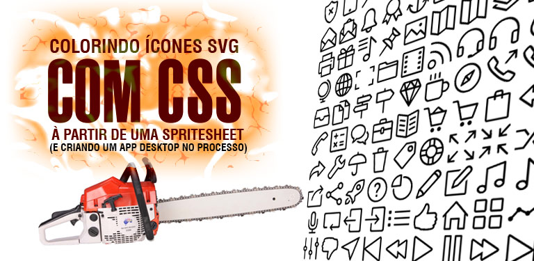
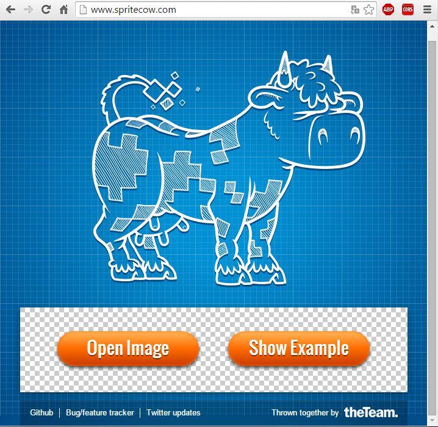
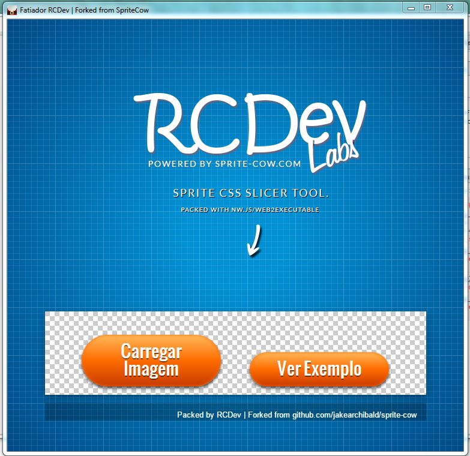
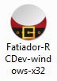
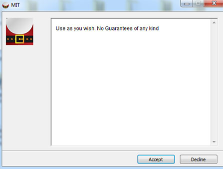
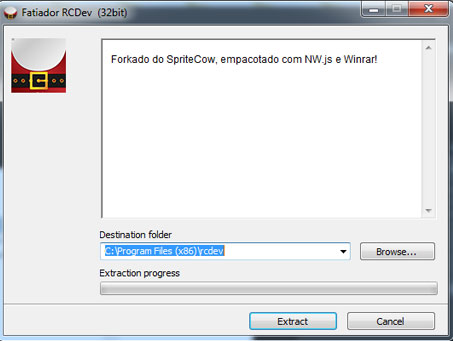
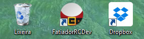
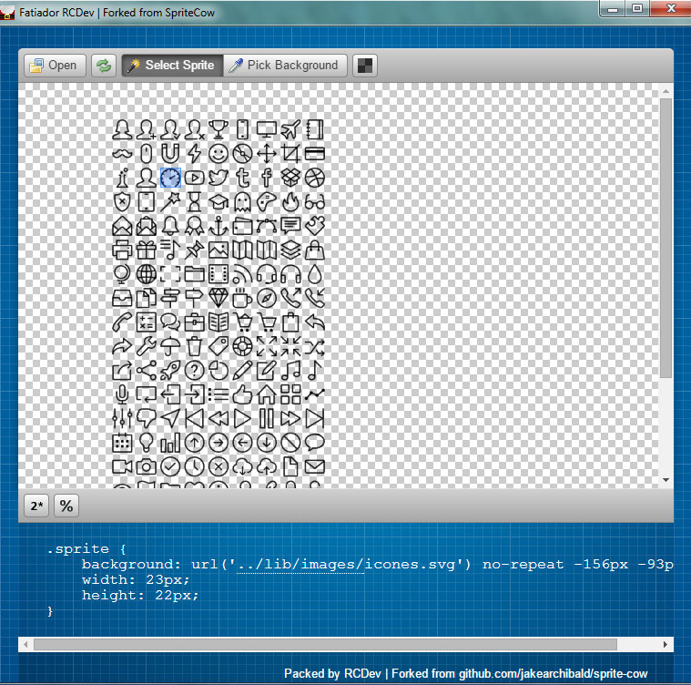

Este post é uma montanha russa: Para usarmos ícones SVG coloridos, vamos criar uma aplicativo Desktop com base num projeto OpenSource HTML para slicear uma spritesheet SVG! Vem ver:
Analisando a demanda:
Tive um problema em um projeto recente, onde o Designer enviou o layout em .PSD, mas os ícones eram todos smart objects rasterizados!
Isso quer dizer que eu poderia ter salvado eles como .png ou .jpg e inserido como background-image ou mesmo <img src="">.
O problema é que isso simplesmente não parece certo.
Aí, acabei usando os icones to FlatIcon, mas - conforme eu esperava - o Designer reclamou. :P
Bom, só ai que eu percebi que havia um .svg nos arquivos que ele me enviou. À questão é que o arquivo svg era um sprite de quase uma centena de icones.
Bom, na verdade não era um SVG, era um .Ai que eu converti para SVG… vai sacando :P
Qual melhor forma de trabalhar com SVG Sprites?
Bom, acho que não serei eu a dar a resposta absoluta, a MELHOR forma…
Mas funcionou legal o aproach de svg Masks e filters para colorir os ícones, inseridos com css background e background-position.
Para pegar a localização exata dos icones dentro da SpriteSheet, usei o Sprite-Cow.
Ele é uma solução online, mas de código aberto.
Veja, abaixo, como é o Serviço online do SpriteCow:

Criando um APP Desktop para slicear os icones
Para tornar mais prático o fluxo de trabalho, aproveitei que o sprite-cow tem (código aberto no Github)[https://github.com/jakearchibald/sprite-cow], e decidi empacotar o app em uma Aplicação Desktop!
Oque fiz foi baixar o source deles, fazer algumas pequenas alterações e empacotei com nw.js
Para empacotar o spritecow em um executável, fazemos o processo do nw.js na pasta
/www
Acesse o repositório já modificado que usei para empacotar AQUI
Após empacotamento com NW.js, temos um executável que nos permite abrir a nossa versão modificada do SpriteCow diretamente na área de trabalho.

Criando um instalador profissional com Winrar
Não vou entrar em muitos detalhes deste processo, pois é legal que seja surpresa :) Usei o Winrar para criar um instalador customizado que, além de compactar os arquivos necessários pra rodar o executável, faz a extração para program files, bem como cria atalhos com ícones, e o próprio instalador tem um ícone customizável.
Você pode baixar e conferir o resultado, Baixando o instalador para Windows Aqui
Confira como ficou o instalador e o fluxo de instalação:
O instalador desktop, criado com o Winrar:

A primeira tela do instalador, que é a tela da Licença/Termos de Serviço

Tela de instalação, onde o instalador oferece para extrair na program/files

Atalho automático na área de trabalho, com ícone personalizado:

Usando o Fatiador para pegar os sprites
Abrindo o arquivo SVG com o nosso recém criado Aplicativo Desktop, temos uma simples interface que nos ajudará à selecionar o ícone desejado.
Ao selecioná-lo, o código CSS é gerado abaixo.

Colorindo os Sprites SVG
Para Colorir SVG que está sendo inserido via CSS não podemos simplesmente usar o atributo color, nem mesmo o stroke ou path.
Pelo fato do arquivo estar sendo inserido via url(), em nosso CSS, ao invés de ‘embedado’ direto no HTML, propriedades que modifiquem o svg em sí não são aceitas.
Por isso vamos usar SVG MASKs.
O que é uma Mascara? (MASK)
Uma máscara é um conceito já antigo no design. É uma representação de espaço que será preservado ou excluído. Uma máscara nada mais é do que uma seleção.
Então se temos uma máscara no formato do ícone SVG, temos uma seleção naquele formato.
O que precisamos fazer, é pintar essa seleção. Pintar o background dessa seleção.
Saca só:
O código de um sprite selecionado é mais ou menos assim:
1 | .sprite { |
Vamos alterar o código acima. Primeiro, um nome específico para o ícone. Depois, o background vira mask e -webkit-mask.
1 | .iconeDash { |
Agora podemos estilizar ele usando classes de cor.
Essas classes de cor serão, nada mais, que classes com o background-color setado para a cor desejada.
Aproveito, também, para definir umas regras que pertencerão à todos os ícones (na classe .icone. A classe .redIcon é um exemplo de como colorir:
1 | .icone { |
Portanto, acima, temos a classe .icone que serve de parâmetro para todos os ícones, e a classe .redIcon que contém a propriedade background-color que dará cor ao elemento.
Para usarmos nosso ícone, nosso HTML será assim:
1 | <span class="icone iconeDash redIcon"></span> |
Dessa forma, o ícone aparecerá vermelho em nossa página.
Mas é importante lembrar que não pintamos o ícone.
Como usamos MASKS, o formato do ícone, no arquivo SVG, é usado como máscara. Por isso a cor de fundo do elemento que tem a máscara aplicada funciona como parâmetro de colorir ;)
Então se usarmos, ao invés de .redIcon , uma classe que contenha uma foto como background, o resultado será um ícone com a textura da foto escolhida. ;)
Essa técnica de máscaras nos permite um leque imenso de opções, mas que ficarão para comentários ou próximos posts.
Por hoje é isso, obrigado por ter vindo :)
Comments